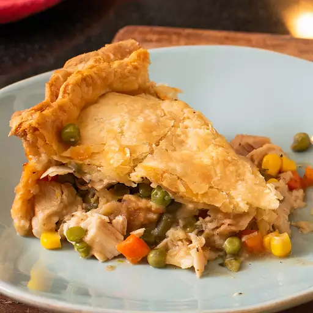

Dad's Leftover Turkey Pot Pie

Description
This turkey pot pie recipe made with leftover turkey from your holiday
dinner makes two 9-inch pies. Chunks of white and dark turkey meat are
mixed with peas, carrots, and beans in a creamy sauce that screams comfort
food. Using ready-made pastry dough and frozen vegetables cuts down on
prep time. These leftover turkey pot pies are so delicious, they don't
last long!
Ingredients
- 2 cups frozen peas and carrots
- 2 cups frozen green beans
- 1 cup sliced celery
- 2/3 cup butter
- 2/3 cup diced onion
- 2/3 cup all-purpose flour
- 1 teaspoon salt
- 1 teaspoon ground black pepper
- 1/2 teaspoon celery seed
- 1/2 teaspoon onion powder
- 1/2 teaspoon italian seasoning
- 1 3/4 cups chicken broth
- 1 1/3 cups milk
- 4 cups cubed leftover cooked turkey
- 2(14.1 ounce) packaged pastry for a 9-inch double-crust pie
Steps
- Preheat the oven to 425 degrees F (220 degrees C).
-
Place frozen peas, carrots, and beans in a saucepan with celery; add
enough water to cover and bring to a boil. Reduce heat to medium-low and
simmer until celery is tender, about 8 minutes. Drain.
-
While the vegetables are simmering, melt butter in a saucepan over
medium heat. Add onion and cook until translucent, about 5 minutes. Add
flour, salt, pepper, celery seed, onion powder, and Italian seasoning
and whisk until a paste forms, about 1 minute. Slowly whisk in chicken
broth and then milk until incorporated; bring to a simmer and cook,
whisking constantly, until sauce thickens, 3 to 5 minutes.
-
Remove thickened sauce from the heat; add cooked, drained vegetables and
cubed turkey and stir until filling is well combined.
-
Set out two 9-inch pie dishes. Fit one pie pastry into the bottom of
each dish. Spoon 1/2 of the pot pie filling into each dish, then lay the
remaining pie pastries over top. Pinch and roll the top and bottom
pastries together at the edges to seal. Use a sharp knife to cut several
small slits in each top pastry to allow steam to release while cooking.
Place pies on baking sheets.
-
Bake in the preheated oven for 15 minutes. Check the top crusts for
browning; if they are browning too quickly, cover with aluminum foil.
Continue to bake until the crusts are golden brown and the filling is
bubbly, 15 to 20 more minutes.
- Remove from the oven and cool for 10 minutes before serving.
Home